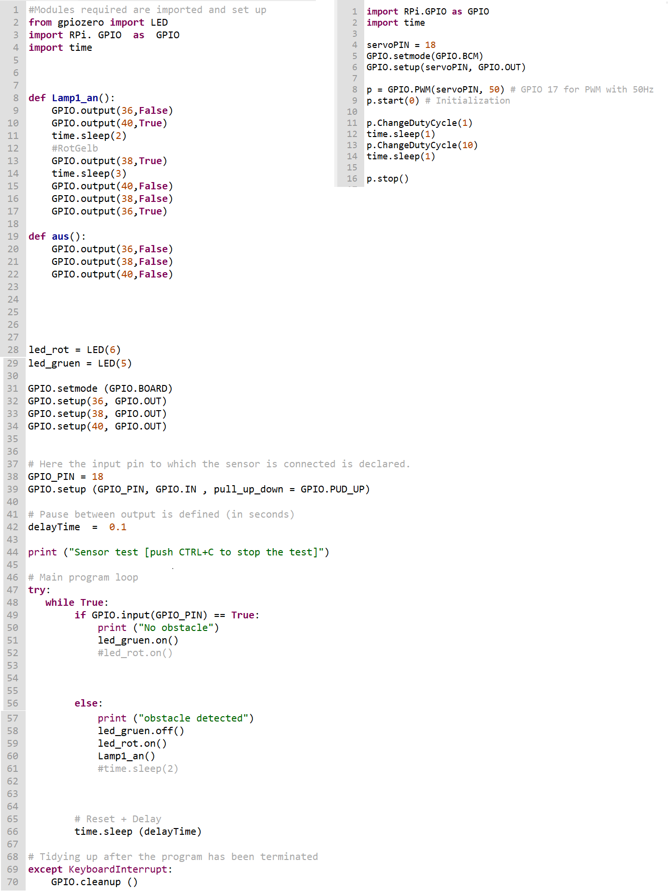
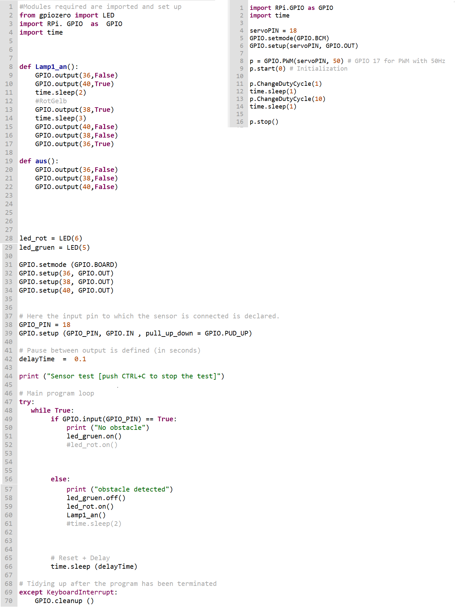

Message goes here
Anleitung:
● Autoampel Anleitungsstatus Zwichen Rot,Gelb und Grün
● Autoampel Anleitungsstatus von Rot, Fußgängerampel von Rot zu Grün,
im Gegensatz zur Autoampel
● Hindernisdetektor-Modul erkennt Objekte
und startet Umschaltung der Ampeln
● Servomotor besitzt Schranke, die an diesem befestigt ist
● Servomotor bewegt Objekt über den Sensor und zurück in Startposition
 
